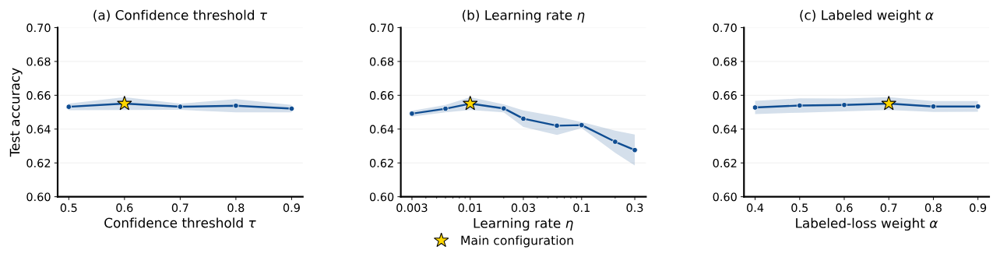

个性化奖励模型要为不同用户给同一条回复打不同的分，训练数据是用户标注的偏好对：同一个提示下两条回复，用户选了哪条。这种标注很贵，每个用户只有几十对，新用户可能只有十几对；与此同时，模型能生成的回复要多少有多少，只是没有用户、也没有偏好标签。杜克大学和乔治华盛顿大学的这篇 PerSPL 把这批无标注回复变成每个用户各自的训练数据：先在训练中把每对标注回复的分数均值压向 0，让不同提示下的分数可以放在一起比；再为每个用户拟合一条"分数→被选中概率"的单调曲线，只给置信度高的无标注回复打伪标签，和标注数据一起反复重训。在 PersonalLLM、HelpSteer2、Reddit TLDR（Reddit 帖子摘要偏好）、Chatbot Arena 四个基准上，PerSPL 对见过的用户和新用户都拿到最高平均准确率。不过拆开看，收益主要落在见过的用户身上：在作者自己的消融里，无标注数据给新用户带来的提升只有 0 到 0.6 个点，在误差范围之内。
1. 为什么无标注回复不能直接用
奖励模型常用 Bradley–Terry（BT）损失训练：用户 在提示 下更喜欢 而不是 ，模型给两者打分 和 ，
这个损失只看两者的分差，给同一个提示下的两个分数同时加 100，损失不变，同提示内的排序也不变。
这在比较同一提示下的两条回复时没问题，但对单条无标注回复就成了麻烦。要给一条回复打"这个用户会喜欢"或"不会喜欢"的伪标签，得拿它的分数和一个跨提示统一的阈值比。论文举了个例子：提示 a 下两条回复得分 (101, 100)，提示 b 下是 (1, 0)。同提示内都排对了，但提示 b 里被选中的那条（1 分）比提示 a 里被拒的那条（100 分）还低，用任何一个阈值都分不开。作者把这个问题叫分数坐标不确定：成对损失定了分差，没定每对分数整体落在哪。注意这个问题只影响跨提示比较和单条回复分类；如果只是在同一个提示下从 N 条回复里挑最好的，加在整个提示上的偏移会互相抵消，不受影响。
现有的半监督奖励模型方法都只学一个全体用户共用的奖励，用一个全局阈值打伪标签，处理不了"同一条回复对不同用户标签不同"的情况。

2. 方法
2.1 分数对中心
既然每对分数的均值没人约束，就加一项把它压向 0：
期望对所有用户的所有标注对取。上面的例子里，两对分数都会被拉到 (0.5, −0.5) 附近，同提示内的排序不变，跨提示的比较也对了。所有主实验里这一项的权重都是 。
附录给了这一项的理论分析。在一个高斯假设的线性模型里，作者证明：加上很小的对中心项，单条回复分类准确率按 的一阶增长，而成对损失只按二阶变差，也就是说小权重时几乎是白赚的。但这有一个前提条件。把一对回复的表示拆成两部分：两条的平均叫"共同部分"，两条的差叫"差异部分"。记差异部分的平均为向量 ，共同部分和差异部分的协方差矩阵分别为 、。前提是 和 不同向，直观地说，就是共同部分的波动形状和差异部分的波动形状不一样，于是成对判断最好的打分方向，不是单条分类最好的方向；此时对中心项会把打分方向转向更适合单条分类的方向；如果两者同向，它只是缩放分数，没有收益。在真实数据上，作者在 HelpSteer2 和 Reddit TLDR 上扫了 ：取 0.01 时，同提示成对准确率的变化分别是 −0.02±0.14 和 0.00±0.36 个点，确实不伤成对判断；最有把握的 10% 候选伪标签的精确率在 HelpSteer2 上提高 2.16 个点，在 Reddit 上的变化区间包含 0。
2.2 每个用户一条校准曲线
有了可比的分数，下一步是确定每个用户的阈值。对用户 的每个标注对，把选中回复的分数标 1、被拒回复的分数标 0，用保序回归拟合一个单调不减的函数 ，输出"这个分数出现在选中一侧的概率"。 第一次达到 0.5 的位置记为该用户的阈值 。
对一条无标注回复，算出它在用户 下的分数 ：若 标为喜欢，若 标为不喜欢，介于两者之间就弃权，不进训练。伪标签的损失以 为分界：
是伪标签。同一条回复对不同用户会落在曲线的不同位置，所以拿到的标签可以不同。
2.3 迭代自训练
第一轮只用标注数据加对中心项训练，得到初始模型和每个用户的校准曲线。之后每一轮：用当前模型给无标注池重新打伪标签（每个用户每次从池里取 1,000 条候选），模型重新初始化，用 训练。校准曲线只用标注数据拟合，所以伪标签的错误不会反过来污染阈值。
模型结构和基线 LoRe 一样：在冻结的 4,096 维语言模型末 token 表示上，学 个线性打分方向（基， 取 2 或 5），每个方向把这条表示变成一个分数；每个用户再有一组非负、加起来等于 1 的混合权重，用户对一条回复的奖励就是这 个分数按他的权重加权求和。新用户只拟合自己的混合权重，基保持不变。所以 PerSPL 和 LoRe 的差别只在训练数据和损失上。
3. 实验
四个基准分别覆盖"回复真不真实"和"用户真不真实"两个维度：PersonalLLM 是合成回复加模拟用户，HelpSteer2 是人工评分回复加按属性权重模拟的用户，Reddit TLDR 和 Chatbot Arena 是真实用户的真实偏好。见过的用户参与联合训练；新用户只用一个小的支持集适配。指标是同提示内成对准确率，五个随机种子取均值。
3.1 主结果
七个基线包括：不区分用户的 BT、两种把用户信息作为模型输入的方法、两种给每个用户加小模块的方法（其中之一是 LoRe）、元学习方法 MRM，以及现成的 Skywork V2 奖励模型。下表列出其中最有代表性的几个：
| 方法 | PersonalLLM 见过/新 | HelpSteer2 见过/新 | Reddit TLDR（100 对）见过/新 | Chatbot Arena 见过/新 |
|---|---|---|---|---|
| BT | 88.8 / 89.0 | 63.0 / 63.2 | 63.2 / 64.3 | 80.3 / 78.1 |
| LoRe | 94.6 / 94.0 | 69.6 / 70.1 | 65.3 / 68.4 | 81.3 / 78.4 |
| MRM | 91.6 / 92.0 | 70.7 / 70.9 | 70.0 / 69.8 | 80.7 / 77.2 |
| PerSPL | 95.7 / 95.5 | 71.6 / 71.2 | 70.7 / 70.1 | 83.0 / 81.0 |
PerSPL 在每一列都是最高均值。和同结构的 LoRe 比，Reddit TLDR 见过用户从 65.3 升到 70.7，说明差距主要来自训练数据和损失。
为了确认领先不是随机种子带来的，作者和每个设置里整体最强的基线做配对 bootstrap。设置共五个：四个基准，其中 Reddit TLDR 分每个见过用户 100 对和 150 对标注两档。见过用户、以及两类用户合起来算的整体准确率，差值区间全部不含 0；新用户的五个区间里有四个不含 0。
需要注意的是，PerSPL 每个基准用了不同的超参数：置信阈值 在 0.6 到 0.9 之间，学习率在 0.01 到 0.3 之间，标注损失权重 在 0.6 到 0.8 之间，基的秩是 2 或 5。基线则各自用一套基准级配置，论文没有说明这些配置是在哪部分数据上选出来的。
3.2 2×2 消融：对中心项和无标注数据谁在起作用
在 HelpSteer2 和 Reddit TLDR 各两个设置上，分别开关对中心项（）和无标注训练（只跑一轮）。下表列出其中两个设置。HelpSteer2 的模拟用户由对各评分属性的权重定义，括号里的 0.1 是控制这些权重在用户之间差异多大的参数；Reddit TLDR 括号里是每个见过用户的标注对数：
| 配置 | HelpSteer2 (0.1) 见过 / 新 | Reddit TLDR (150 对) 见过 / 新 |
|---|---|---|
| 完整 PerSPL | 71.6 / 71.2 | 70.9 / 70.3 |
| 有无标注数据、无对中心 | 66.5 / 69.7 | 62.5 / 62.5 |
| 有对中心、无无标注数据 | 70.9 / 71.0 | 69.1 / 70.3 |
| 两者都没有 | 70.9 / 71.1 | 69.0 / 69.6 |
只加对中心项，见过用户准确率变化在 ±0.1 之内。没有对中心时加无标注数据，四组设置里见过用户掉 2.9 到 6.5 个点；有对中心时再加，涨 0.5 到 1.8 个点。所以对中心项本身几乎不提分，它的作用是让无标注数据从有害变成有用。
但看新用户一列，结论要打折扣。有对中心时再加无标注数据，新用户在四组设置里分别只涨 0.2、0.4、0.6 和 0 个点，而这些结果的标准差在 0.5 到 1.0 之间。也就是说，主表里 PerSPL 在新用户上的领先，更多来自对中心项和整套训练配置，而不是无标注数据本身。这与方法的设计也说得通：新用户只拟合自己的混合权重，无标注数据主要改进的是在见过用户上学到的那组基。

3.3 超参数敏感性

置信阈值从 0.5 到 0.9，总体准确率的变化只有 0.30 个点； 等于完全不弃权、给所有候选打伪标签，也只比主配置低 0.19 个点。 从 0.4 到 0.9 的变化范围是 0.23 个点。这说明"只给高置信回复打伪标签"这一设计在这里作用很小，真正起作用的是对中心后分数可比、阈值可信。学习率的影响更大，从 0.01 加到 0.3 准确率掉 2.75 个点。
3.4 标签噪声、标注预算和分布偏移
在 HelpSteer2 上和最强基线 MRM 对比，随机翻转偏好标签的比例从 0 加到 0.5，PerSPL 一直领先，而且噪声越大领先越多，翻转一半标签时领先 6.69 个点，说明校准和伪标签对噪声标注有一定的纠偏作用。每个见过用户的标注从 50 对加到 200 对，PerSPL 的领先一直在 1 个点左右，没有随标注增多而消失。
分布偏移实验检验无标注池的回复来自别的生成器时还有没有用。PersonalLLM 上固定 20% 的标签翻转（避免准确率饱和），默认的回复来自 GPT-4o、Claude 3 等六个生成器，无标注池里来自 Command R+ 和 GPT-4 Turbo 两个未见生成器的比例从 0 到 1 变化。相对只用标注数据的模型，总体提升从 3.21 个点降到 0.66 个点，区间都在 0 以上。分开看，池子全换成新生成器时，见过用户仍高 1.5 个点，新用户则是 82.45 对 82.66，略低于不用无标注数据，这和 3.2 节的观察一致。
4. 局限
作者在附录列出：每个用户的校准曲线需要标注作锚点，零样本新用户不在适用范围；按置信度筛伪标签可能让"容易的"回复区域被过度代表，作者没有按用户子群体测伪标签的精确率和覆盖率；分布偏移只测了两个生成器；所有实验都在冻结表示上训练奖励头，没有端到端微调的对照；用户数最多 200 个，生产规模下的行为未知；只测了英文的指令跟随、对话和摘要。另外，基线 LoRe 的代码只允许学术使用。
补充一点：实验评的是奖励模型的成对准确率，没有接到下游的策略训练或回复选择上看效果。
5. 实践意义
如果你在做个性化排序或个性化奖励模型，手上有大量没标签的候选，PerSPL 的第一步最值得借：给成对损失加一项把每对分数均值压向 0，然后检查不同请求之间的分数是否可比。消融说明这一步是前提，没有它直接自训练会掉 3 到 6 个点。第二步按用户拟合保序回归做校准、给无标注回复打伪标签，能给老用户带来 0.5 到 1.8 个点的提升；对新用户，这篇的数据不足以说明有帮助。
讨论
欢迎补充实验细节、复现经验或不同看法。需 GitHub 登录。
正在加载讨论…